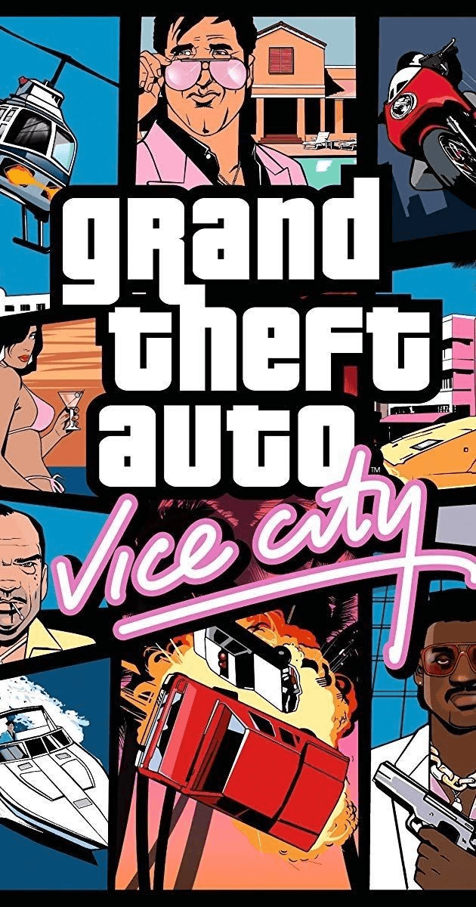

Import your game.tar.gz once — it's stored locally in your browser via OPFS and served by a Service Worker. No CDN, no external server, no recurring downloads. After the first import it works fully offline.
The imported archive is stored locally by this browser, so you can come back later without reimporting unless you want to replace it.
Download game.tar.gzDownload archive if you want the file directly from this page.Choose game.tar.gz to select a file from your computer.Start to play and wait for the game data to load.Recommended: use a modern desktop browser for the smoothest setup and performance.

DISCLAIMER: This game is based on an open source version of GTA: Vice City. It is not a commercial release and is not affiliated with Rockstar Games.
Browser client port by: @joncodeofficial
Based on: reVCDOS by @Lolendor
WASM engine by: @specialist003, @caiiiycuk, @SerGen